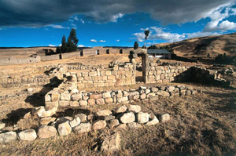
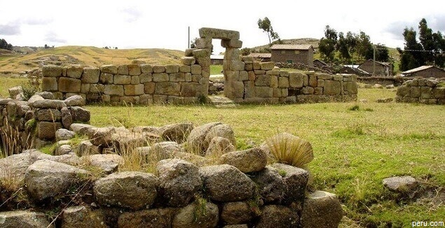
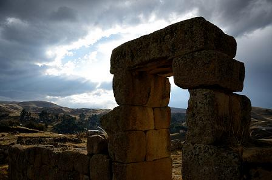
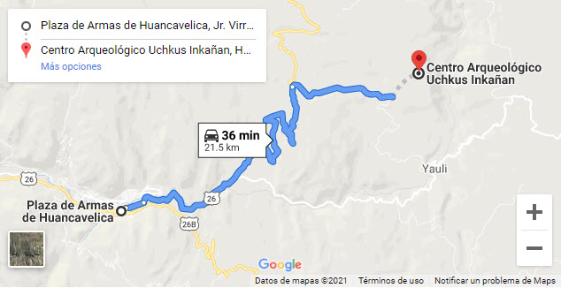
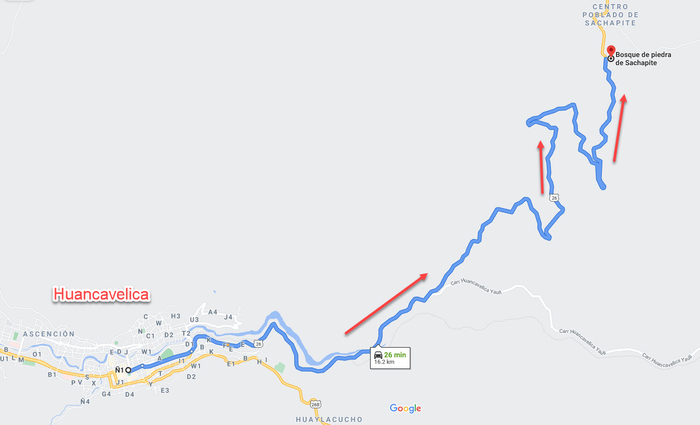

Uchkus–Inkañanes un complejo arqueológico ubicado en la comunidad campesina de Uchcus Alto del distrito de Yauli en la provincia homónima de la Región Huancavelica, Perú, a 3,800 msnm en la margen izquierda del río Ichu.
  Este centro arqueológico es considerado como un observatorio astronómico y centro de experimentación de la Cultura Inca.1 Comprende tres sectores, cada uno con características propiamente especiales, desde el punto de vista arquitectónico, entre ellos tenemos a Qorimina, Inkañan y Chunkana.
Este complejo arquitectónico comprende tres sectores:
* Qorimina
* Inkañan
* Chuncana
Para ir al Complejo Arqueológico de Uchkus Inkañan primero se debe llegar a Huancavelica. Hay dos alternativas desde la capital. La primera es ir en bus haciendo la ruta Lima – Huancayo – Huancavelica. Son 457 Km. que se recorren en doce horas aproximadamente. Otra opción es, luego de arribar a Huancayo en autobús (siete horas), abordar el ‘Tren macho’ (seis horas). Finalmente de Huancavelica se parte hacia el destino final. Uchkus Inkañan está a 21.5 Km de Huancavelica y en auto se accede en 36 minutos aproximadamente.
El Bosque de piedra de Sachapite es un bosque de piedra ubicado en la Cordillera de los Andes, en el departamento de Huancavelica. Se encuentra a 20 km de la ciudad de Huancavelica. Las formaciones rocosas se atribuyen a las emanaciones volcánicas y cenizas cementadas.
.jpg)
.jpg)
.jpg)
A 20 km. aproximadamente de la ciudad de Huancavelica, se encuentra el bosque de piedras "Los Frailes" ubicado en el distrito de Paucará, provincia de Acobamba, con formaciones impresionantes.
